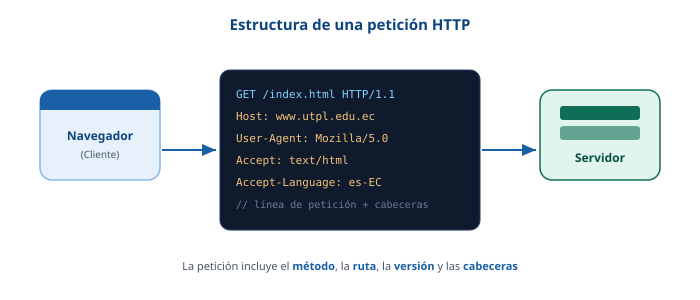

La solicitud HTTP
Cuando el navegador ya conoce la dirección del servidor, le envía un mensaje llamado petición (o request). Ese mensaje indica qué recurso se quiere y de qué forma.
¿Qué contiene una petición?
Una petición HTTP tiene una línea inicial (con el método y la ruta), unas cabeceras (datos extra como el idioma o el tipo de contenido aceptado) y a veces un cuerpo con información.

Métodos HTTP: GET y POST
El método indica qué acción quiere hacer el cliente sobre el recurso. Los más usados son GET y POST. En la siguiente tabla se comparan:
| Método | Descripción | Cuándo se usa |
|---|---|---|
| GET | Solicita datos de un recurso. Los parámetros van visibles en la URL. | Cargar una página, hacer una búsqueda, abrir un enlace. |
| POST | Envía datos al servidor en el cuerpo de la petición (no se ven en la URL). | Enviar un formulario de registro o de inicio de sesión. |
| HEAD | Pide solo las cabeceras de la respuesta, sin el cuerpo. | Comprobar si un recurso existe o cuándo se modificó. |
| PUT | Crea o actualiza por completo un recurso en el servidor. | Actualizar un registro desde una API. |
| DELETE | Pide eliminar un recurso. | Borrar un registro mediante una API. |
Diferencia clave: usamos GET cuando solo queremos obtener
información y POST cuando necesitamos enviar datos de forma más segura,
como una contraseña.
Para revisar más
La documentación oficial de Mozilla explica todos los métodos con ejemplos:
MDN - Métodos HTTP MDN - Introducción a HTTP